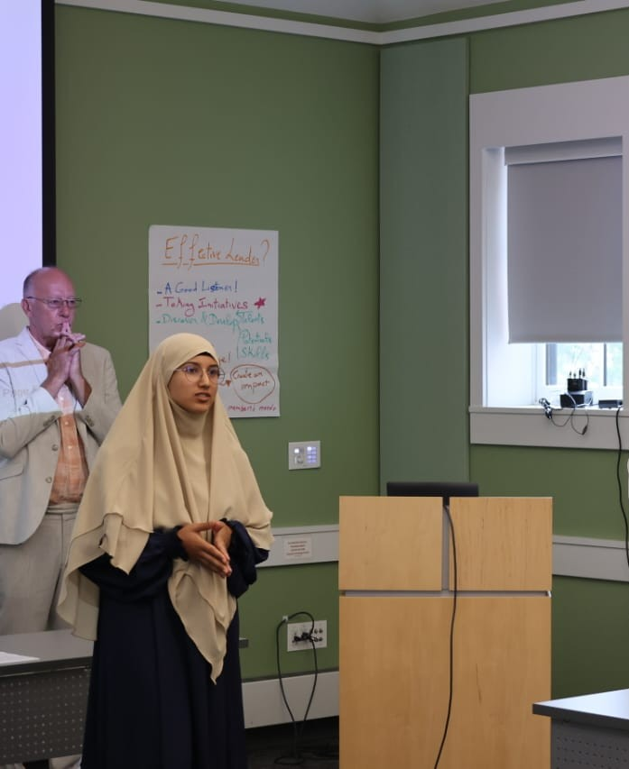
Selected (1 of 4 / ~1,000 applicants), U.S. Dept. of State.
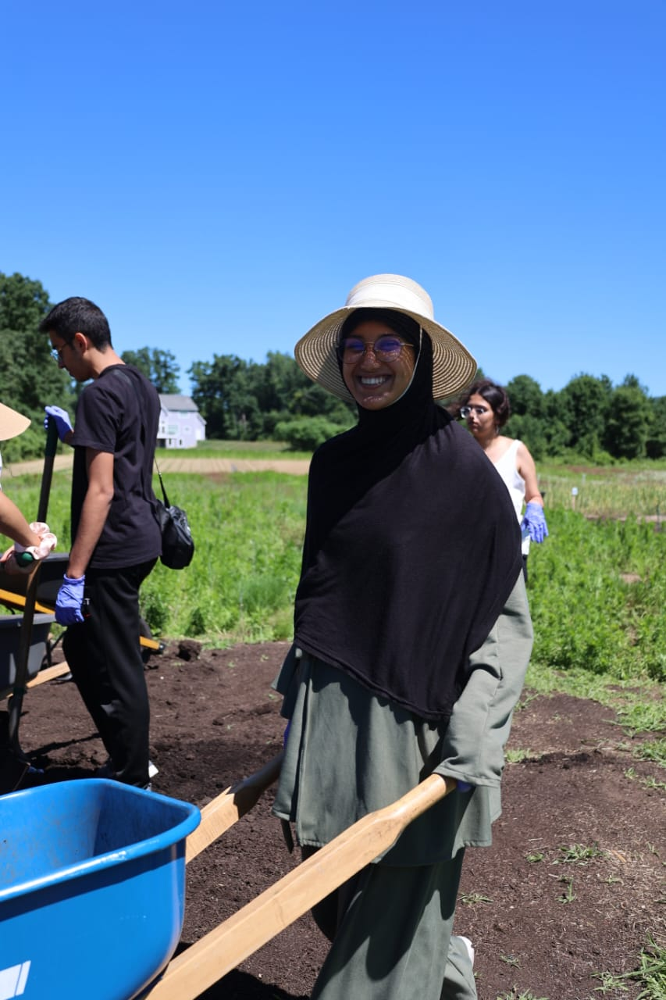
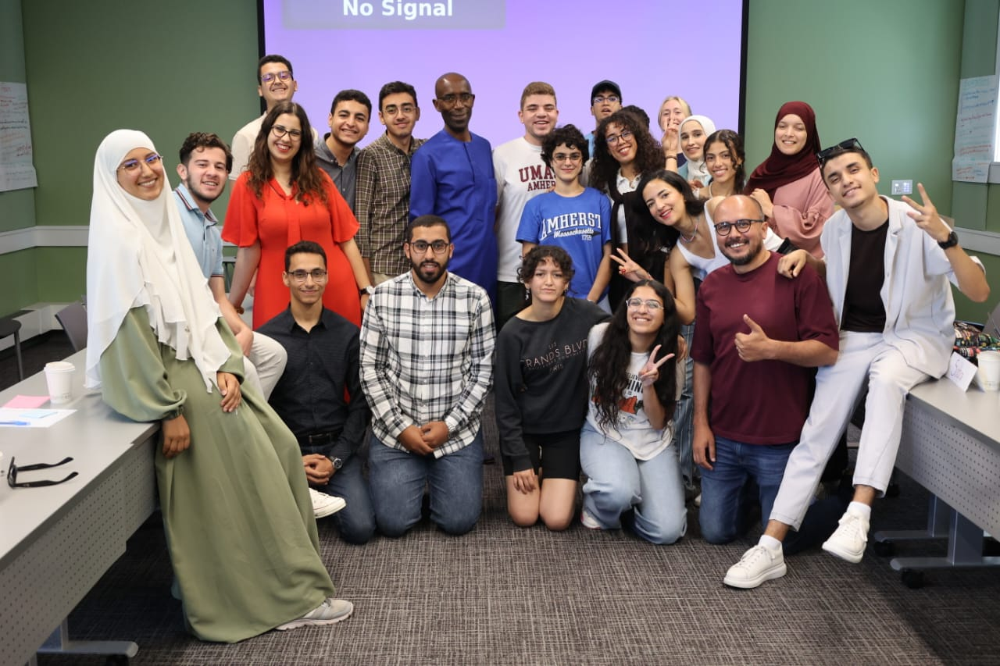
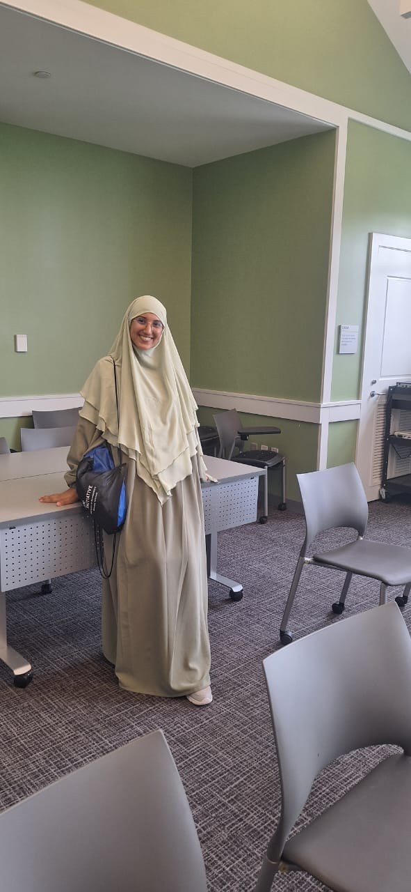
LCA & Sustainability Engineer
Specialized in prospective and comparative LCA, PEF/CFF, scenario modelling and sensitivity analysis. Built and delivered 8 LCA projects across compost, bio-based materials, biofuels and bioplastics, translating early-stage data into hotspots, scale-up scenarios and actionable recommendations.
8 LCA projects, 7 of them prospective, plus bioprocess, biomaterials and innovation projects at INSAT.

Selected (1 of 4 / ~1,000 applicants), U.S. Dept. of State.



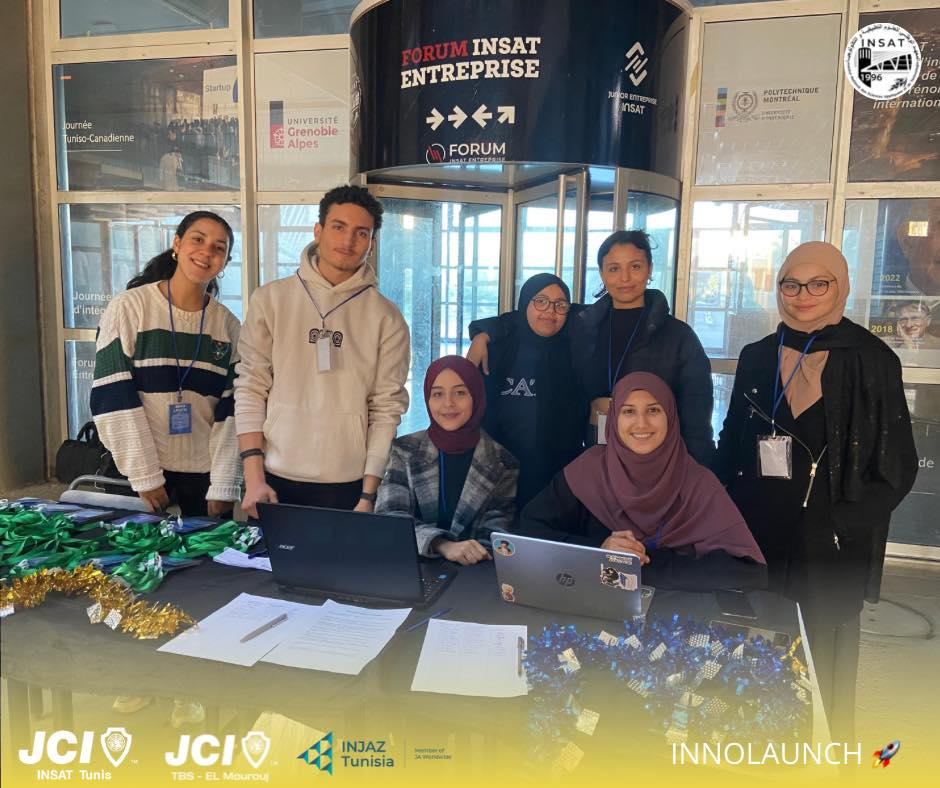
Recognized for leadership, dedication, and impact.
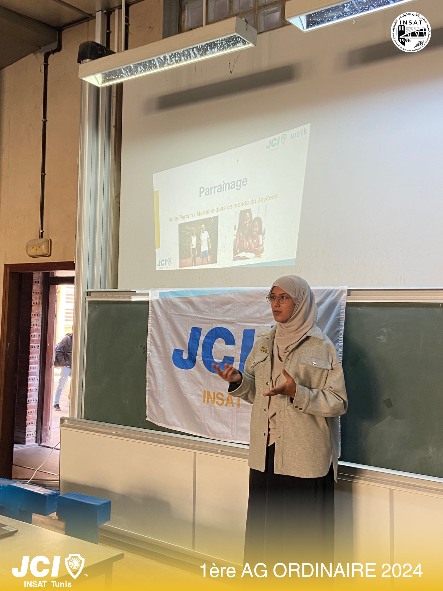
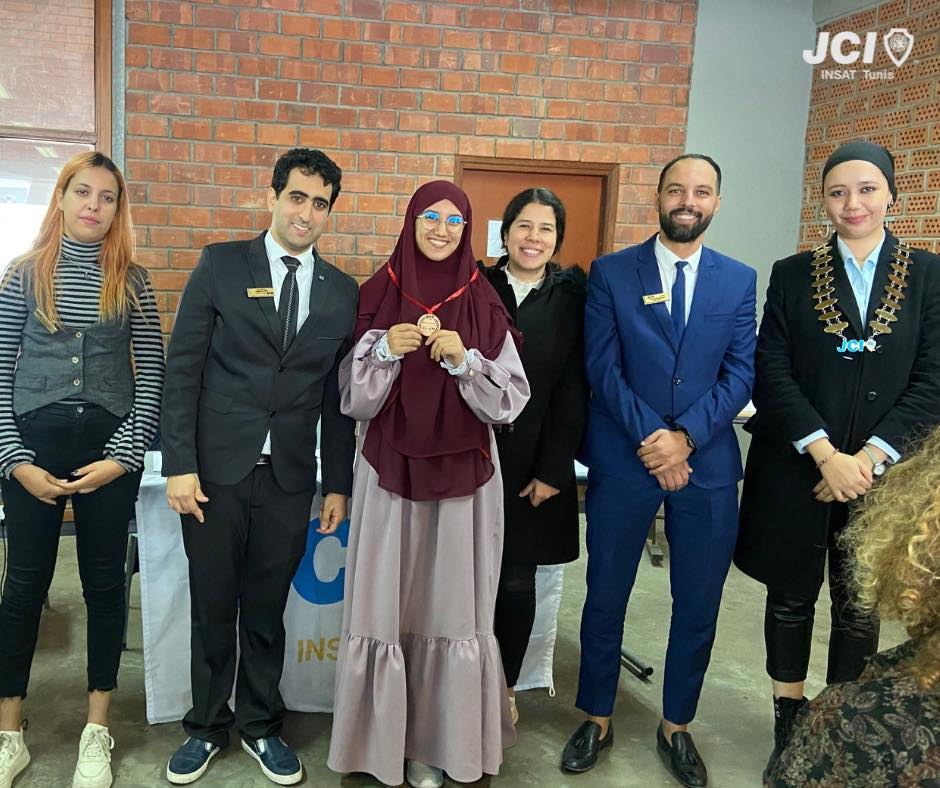
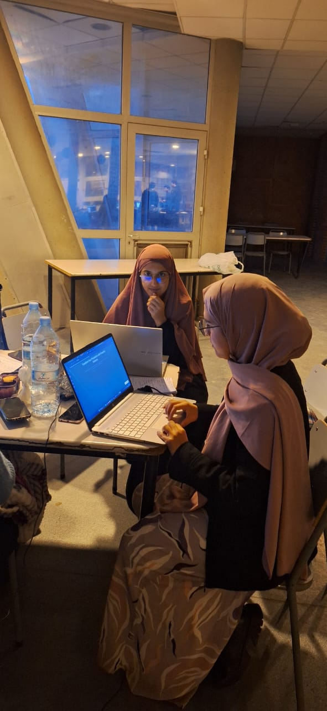
Led plan & pitch for an AI-driven solution.
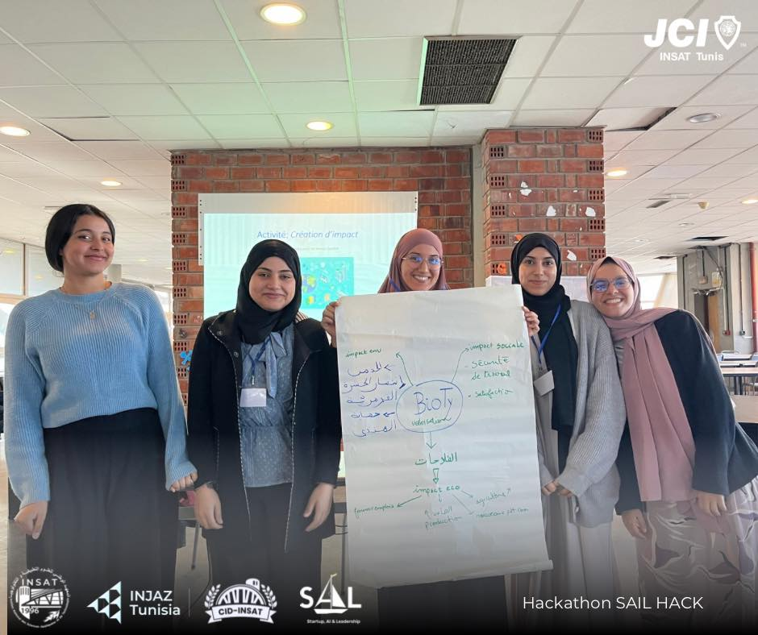
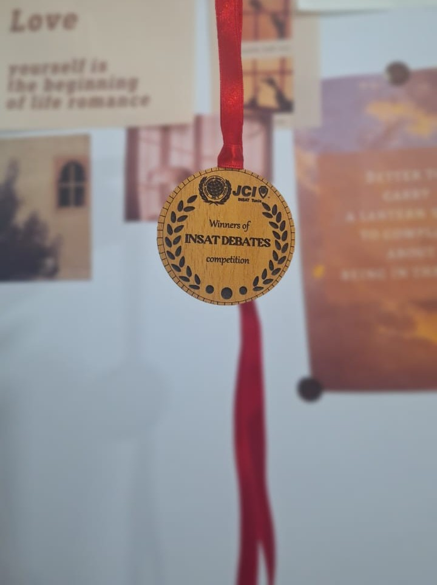
Public speaking, critical thinking, teamwork.
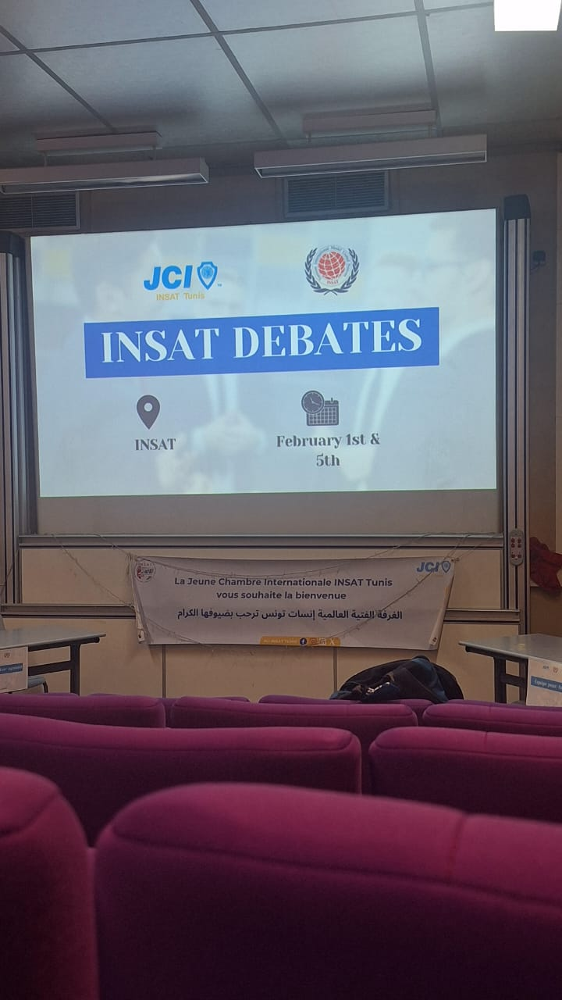
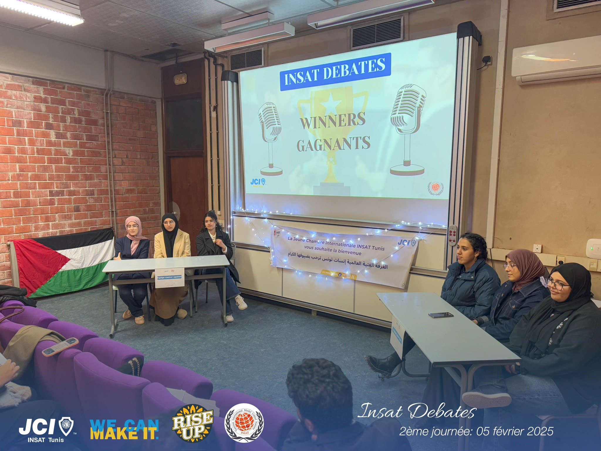
Hiring for an LCA engineer role? I'd be glad to talk.
Email: dorradhibi.pro@gmail.com
Phone: +216 50 822 174
LinkedIn: linkedin.com/in/dhibi-dorra